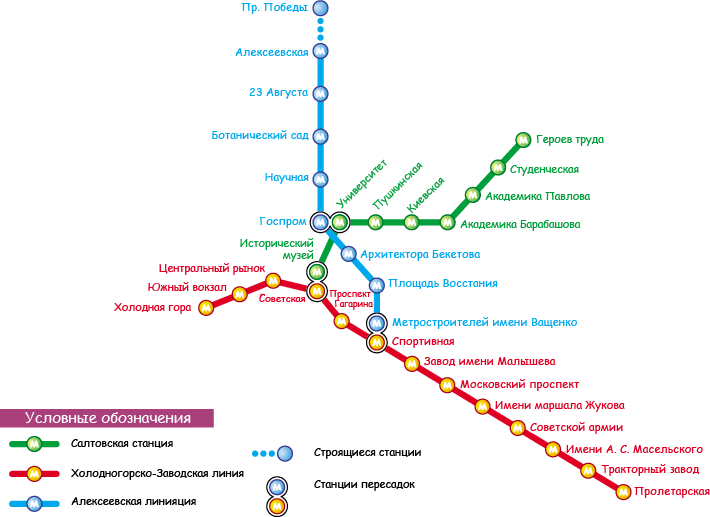

<!-- BEGIN .popup_metro -->
<div class="popup popup_metro">
	<h2 class="popup-title">Выберите удобную станцию метро</h2>
	<a href="#" class="popup-close"></a>
	<form action="#">
		<div class="metro">
			
			<ul class="metro-station">
				<li class="metro-kholodnaya-gora">
					<input type="radio" name="metro-station" id="kholodnaya-gora">
					<label for="kholodnaya-gora">Холодная гора<span class="pointer"></span></label>
				</li>
				<li class="metro-yuzhnyi-vokzal">
					<input type="radio" name="metro-station" id="yuzhnyi-vokzal">
					<label for="yuzhnyi-vokzal">Южный вокзал<span class="pointer"></span></label>
				</li>
				<li class="metro-tsentralnyi-rynok">
					<input type="radio" name="metro-station" id="tsentralnyi-rynok">
					<label for="tsentralnyi-rynok">Центральный рынок<span class="pointer"></span></label>
				</li>
				<li class="metro-sovetskaya">
					<input type="radio" name="metro-station" id="sovetskaya">
					<label for="sovetskaya">Советская<span class="pointer"></span></label>
				</li>
				<li class="metro-prospekt-gagarina">
					<input type="radio" name="metro-station" id="prospekt-gagarina">
					<label for="prospekt-gagarina">Проспект Гагарина<span class="pointer"></span></label>
				</li>
				<li class="metro-sportivnaya">
					<input type="radio" name="metro-station" id="sportivnaya">
					<label for="sportivnaya">Спортивная<span class="pointer"></span></label>
				</li>
				<li class="metro-malysheva">
					<input type="radio" name="metro-station" id="malysheva">
					<label for="malysheva">Завод имени Малышева<span class="pointer"></span></label>
				</li>
				<li class="metro-moskovskii-prospekt">
					<input type="radio" name="metro-station" id="moskovskii-prospekt">
					<label for="moskovskii-prospekt">Московский проспект<span class="pointer"></span></label>
				</li>
				<li class="metro-marshala-zhukova">
					<input type="radio" name="metro-station" id="marshala-zhukova">
					<label for="marshala-zhukova">Маршала Жукова<span class="pointer"></span></label>
				</li>
				<li class="metro-sovetskoi-armii">
					<input type="radio" name="metro-station" id="sovetskoi-armii">
					<label for="sovetskoi-armii">Советской Армии<span class="pointer"></span></label>
				</li>
				<li class="metro-maselskogo">
					<input type="radio" name="metro-station" id="maselskogo">
					<label for="maselskogo">Имени А. С. Масельского<span class="pointer"></span></label>
				</li>
				<li class="metro-traktornyi-zavod">
					<input type="radio" name="metro-station" id="traktornyi-zavod">
					<label for="traktornyi-zavod">Тракторный завод<span class="pointer"></span></label>
				</li>
				<li class="metro-proletarskaya">
					<input type="radio" name="metro-station" id="proletarskaya">
					<label for="proletarskaya">Пролетарская<span class="pointer"></span></label>
				</li>


				<li class="metro-geroev-truda">
					<input type="radio" name="metro-station" id="geroev-truda">
					<label for="geroev-truda">Героев труда<span class="pointer"></span></label>
				</li>
				<li class="metro-studencheskaya">
					<input type="radio" name="metro-station" id="studencheskaya">
					<label for="studencheskaya">Студенческая<span class="pointer"></span></label>
				</li>
				<li class="metro-akademika-pavlova">
					<input type="radio" name="metro-station" id="akademika-pavlova">
					<label for="akademika-pavlova">Академика Павлова<span class="pointer"></span></label>
				</li>
				<li class="metro-akademika-barabashova">
					<input type="radio" name="metro-station" id="akademika-barabashova">
					<label for="akademika-barabashova">Академика Барабашова<span class="pointer"></span></label>
				</li>
				<li class="metro-kievskaya">
					<input type="radio" name="metro-station" id="kievskaya">
					<label for="kievskaya">Киевская<span class="pointer"></span></label>
				</li>
				<li class="metro-pushkinskaya">
					<input type="radio" name="metro-station" id="pushkinskaya">
					<label for="pushkinskaya">Пушкинская<span class="pointer"></span></label>
				</li>
				<li class="metro-universitet">
					<input type="radio" name="metro-station" id="universitet">
					<label for="universitet">Университет<span class="pointer"></span></label>
				</li>
				<li class="metro-istoricheskii-muzei">
					<input type="radio" name="metro-station" id="istoricheskii-muzei">
					<label for="istoricheskii-muzei">Исторический музей<span class="pointer"></span></label>
				</li>

				<li class="metro-pr-pobedy">
					<input type="radio" name="metro-station" id="pr-pobedy">
					<label for="pr-pobedy">пр. Победы<span class="pointer"></span></label>
				</li>
				<li class="metro-alekseevskaya">
					<input type="radio" name="metro-station" id="alekseevskaya">
					<label for="alekseevskaya">Алексеевская<span class="pointer"></span></label>
				</li>
				<li class="metro-23-avgusta">
					<input type="radio" name="metro-station" id="23-avgusta">
					<label for="23-avgusta">23 Августа<span class="pointer"></span></label>
				</li>
				<li class="metro-botanicheskii-sad">
					<input type="radio" name="metro-station" id="botanicheskii-sad">
					<label for="botanicheskii-sad">Ботанический сад<span class="pointer"></span></label>
				</li>
				<li class="metro-nauchnaya">
					<input type="radio" name="metro-station" id="nauchnaya">
					<label for="nauchnaya">Научная<span class="pointer"></span></label>
				</li>
				<li class="metro-gosprom">
					<input type="radio" name="metro-station" id="gosprom">
					<label for="gosprom">Госпром<span class="pointer"></span></label>
				</li>
				<li class="metro-arkhitektora-beketova">
					<input type="radio" name="metro-station" id="arkhitektora-beketova">
					<label for="arkhitektora-beketova">Архитектора Бекетова<span class="pointer"></span></label>
				</li>
				<li class="metro-pl-vosstaniya">
					<input type="radio" name="metro-station" id="pl-vosstaniya">
					<label for="pl-vosstaniya">Площадь Восстания<span class="pointer"></span></label>
				</li>
				<li class="metro-metrost-im-vashchenko">
					<input type="radio" name="metro-station" id="metrost-im-vashchenko">
					<label for="metrost-im-vashchenko">Метростроителей имени Ващенко<span class="pointer"></span></label>
				</li>
			</ul>
		</div>
		<div class="btn-hold">
			<input type="submit" value="Применить" class="btn btn_green">
		</div>
	</form>
	

</div>
<!-- END .popup_metro -->